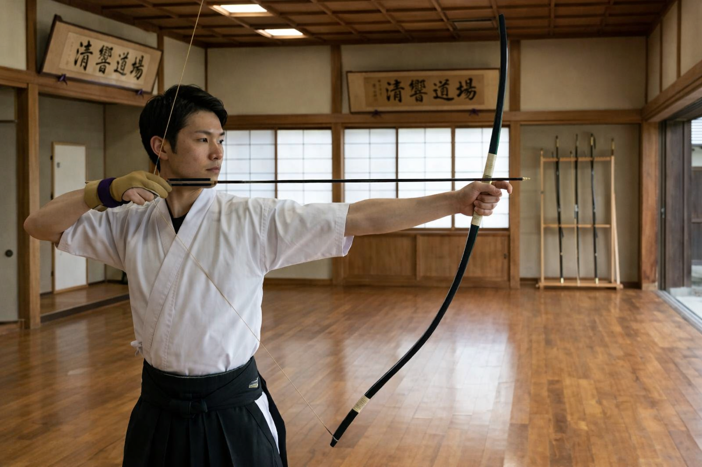
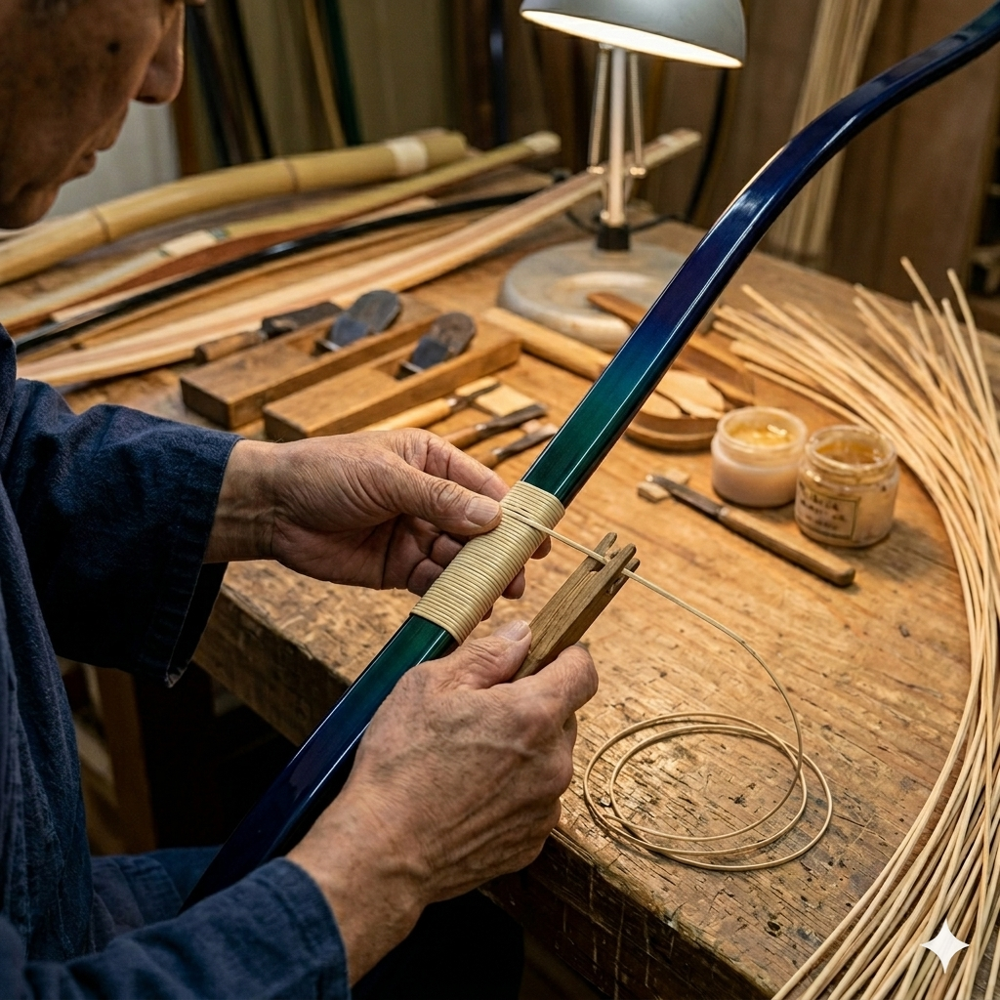
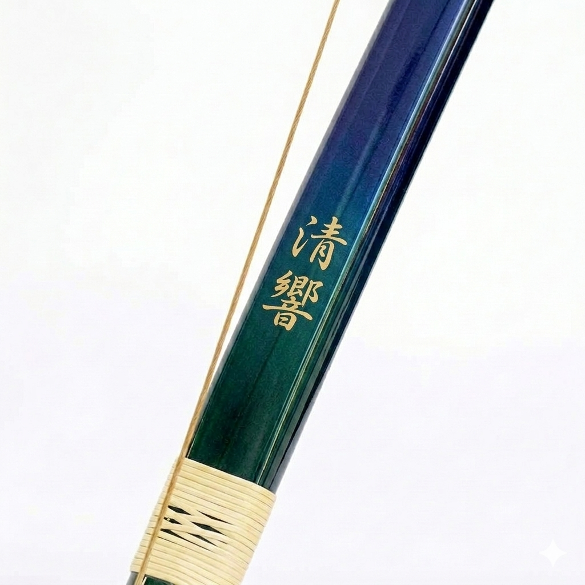
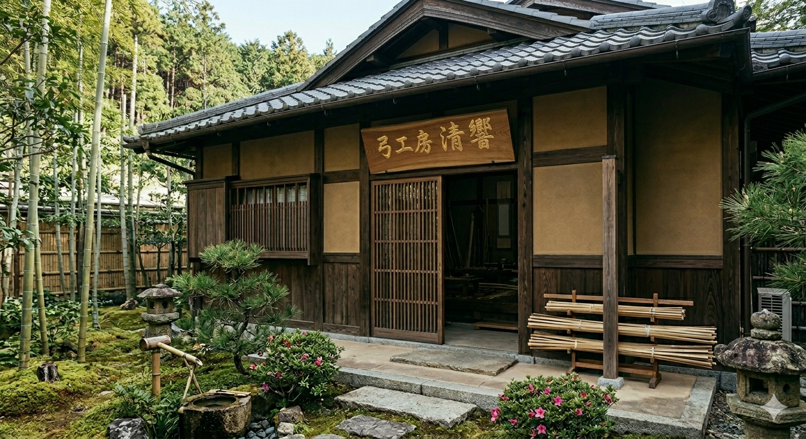
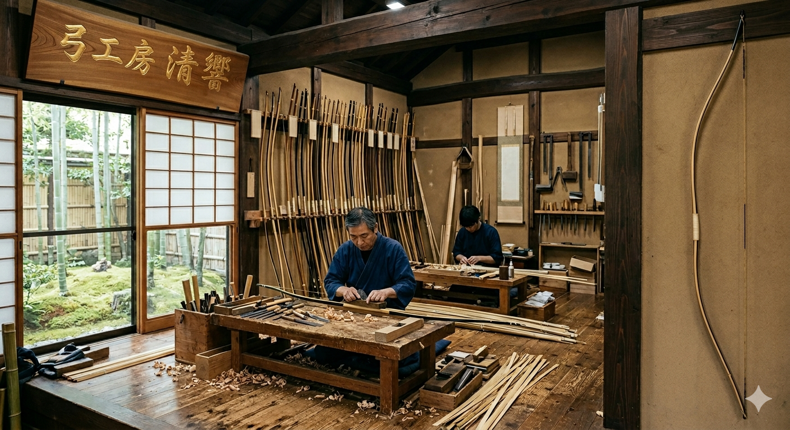
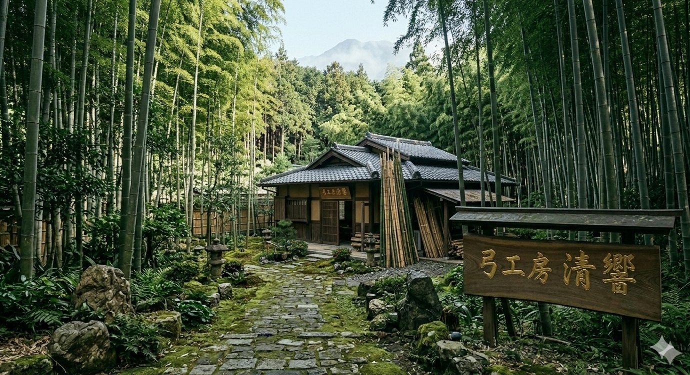

「もう一段上を目指すあなたへ。」
「響きは、真実に到達する。」
理想の一射とは何か。その問いに対する一つの答えがここにあります。
『清響』が求めたのは、射手の感性と共鳴する極上の射感。独自のカーボン積層技術が、圧倒的な矢飛びと、静寂の中に響き渡る美しい弦音をもたらします。
手に伝わる衝撃は最小限に、放たれる矢の冴えは最大限に。弓道家が求める「理想の離れ」を、この一張が具現化します。
最高峰の矜持を、その手に。
— 清響

『清響』は、単に的中を追求するだけでなく、弓道における「美」と「質」を重んじるすべての射手のために設計されました。特に以下のような志を持つ方へ、自信を持ってお勧めいたします。
弓道において、弦音は射の完成度を象徴する調べです。「清響」はその名の通り、雑味のない澄んだ高音を響かせます。道場の静寂を切り裂くような、美しく透明感のある音を自分の得手にしたい方に、これ以上ない選択となるでしょう。
離れの瞬間の反動が抑えられているため、発射後も身体の軸がぶれず、凛とした「残心」を保つことができます。審査員に安定感と品位を印象づけたい高段位受審者や、一射の所作すべてに妥協を許さないこだわりを持つ方に最適です。
エネルギー伝達効率を極限まで高めたことで、矢が標的に吸い込まれるような鋭い弾道を実現しました。「ただ当たる」だけでなく、矢のスピード、軌道の美しさ、そして圧倒的な「冴え」で、競技の場においても一目を置かれる存在を目指す方に。
独自の振動吸収技術により、手首や肩への衝撃を最小限に留めました。「反動の強い弓で体を痛めたくない」「長時間の稽古でも常に同じ感覚で引き続けたい」という、向上心豊かな射手の修練を、道具の面から強力にバックアップします。
メンテナンスの容易なカーボン・グラス弓でありながら、引き心地や音といった「情緒的品質」を大切にしたい方へ。工芸品のような気品ある佇まいは、所有する喜びとともに、道場へ向かう足取りをより確かなものにしてくれるはずです。
メンテナンスの容易なカーボン・グラス弓でありながら、引き心地や音といった「情緒的品質」を大切にしたい方へ。工芸品のような気品ある佇まいは、所有する喜びとともに、道場へ向かう足取りをより確かなものにしてくれるはずです。

一枚のカーボンシート、一筋の木材。それらが「清響」という命を宿すまでには、数値だけでは測れない職人の「眼」と「手」の感覚が不可欠です。

『清響』は、圧倒的な「弦音の美しさ」と
「矢飛びの冴え」を追求した、
最高峰のカーボン・グラス弓です。
※価格は税込表示です。送料別途。詳細はお問い合わせください。

竹林に囲まれ、四季の移ろいを感じる静かな山間に「弓工房 清響」はあります。
鳥のさえずりと竹を削る音だけが響くこの場所で、私たちは日々、木と対話し、素材の息吹を一張の弓へと変えていきます。
機械化が進む現代だからこそ、手仕事でしか生み出せない「清らかな響き」を求めて。
射手の皆様の心に寄り添う一張を、この工房からお届けいたします。

使い込まれた鉋（かんな）が乾いた音を立て、繊細な木屑が舞う。
職人が一張と向き合う時、そこには一切の妥協はありません。
背景に並ぶ弓の数々は、すべてが一点もの。
伝統の技法に裏打ちされた鋭い眼光が、素材の癖を読み解き、射手の力を最大限に引き出す「成り」へと導きます。
壁に整然と並ぶ道具の一つひとつが、これまで積み上げてきた信頼と技術の歴史を物語っています。

〒885-0114 宮崎県都城市 弦竹谷（つるたけだに） 4-22-1
TEL：0986-36-5080
宮崎自動車道「都城IC」より車で約20分。
霧島連山の麓、竹林の小径を進んだ突き当たりにございます。
※職人が一張ずつ手作業で制作しているため、作業中はお電話に出られない場合がございます。修理でのご来訪の際は、事前のご予約をお願い申し上げます。
清かな響きを、その手に。